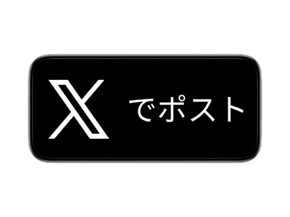
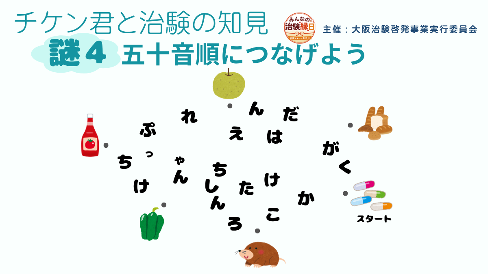
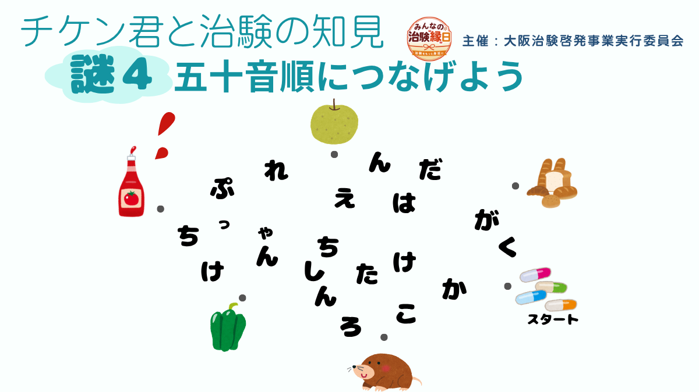
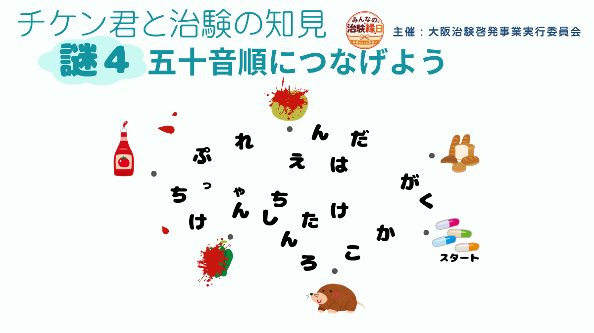
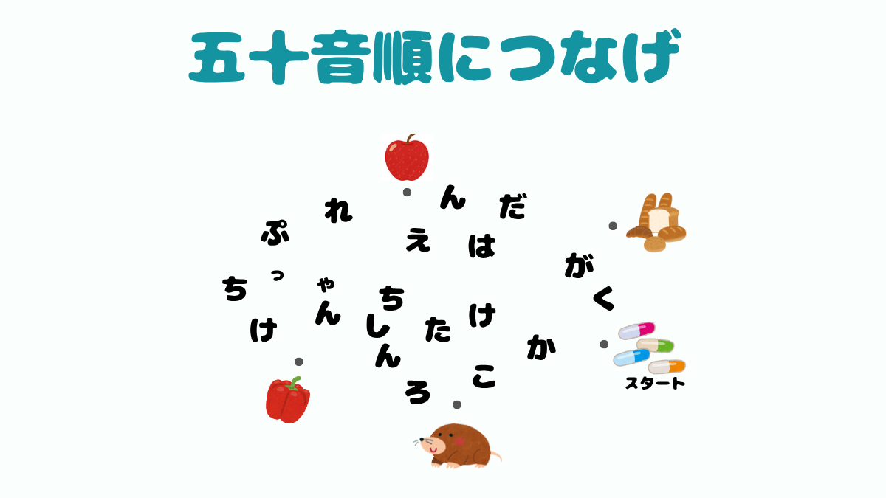

ケチャップがつぶれて中身が勢いよく飛び出した！



クリアおめでとうございます！
「チケン君と治験の知見」をプレイしていただきありがとうございました！
この作品を通してみなさまが治験のことをより理解いただけたら幸いです。
主催：大阪治験啓発事業実行委員会
製作：大阪大学謎解きサークルOUtfoX
「チケン君と治験の知見」をプレイしていただきありがとうございました！
この作品を通してみなさまが治験のことをより理解いただけたら幸いです。
主催：大阪治験啓発事業実行委員会
製作：大阪大学謎解きサークルOUtfoX